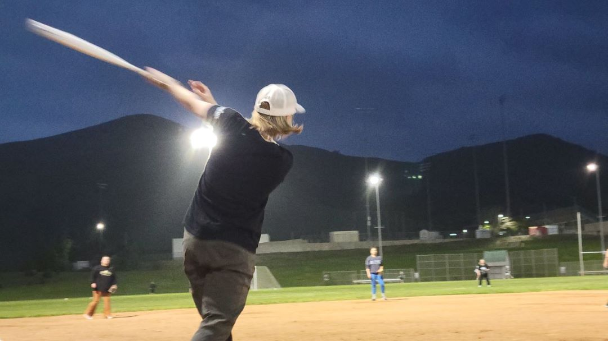
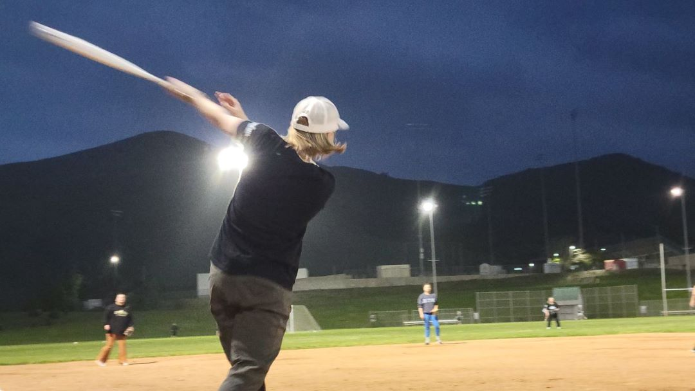

If you're a fan of baseball in the San Luis Obispo area then this is the perfect website for you.
From Cal Poly Club Baseball to the San Luis Obispo Blues, we cover everything that deals with how baseball plays into the lives of the players, coaches and fans.
Cal Poly Women's Club Baseball
Cal Poly's women's club baseball practices twice a week at the Lower Level Fields of Cal Poly's campus. Here's what a typical practice looks like.
 

 />
/>